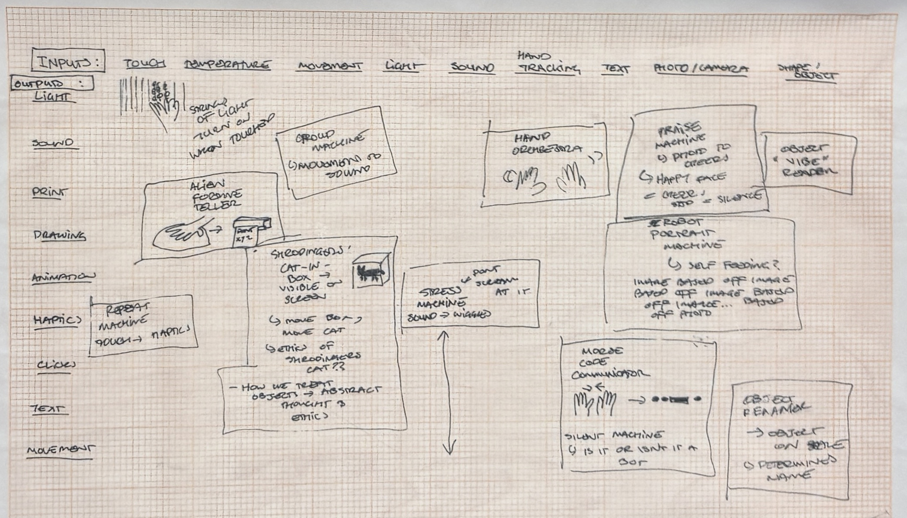

back
Last but not least, our Inputs & Output brainstorm was a great activity in helping me consider what I wanted to explore for the final project a little bit later in the semester. From this activity, I think I ended up being drawn to ideas that I could explore a crticial idea or narrative: possibly one that explored synthesia through the adaption of sense and spatial awareness across digital interfaces.
Overall, I felt that this activity was great to break down the next focus of interactive media through a physical computing framework, and helped reaffirm ideas that I found engaging through the semester as options for further development.
My favourite ideas that came out of this activity were: Machines that reacted to body language and movement (Praise machine, Crowd Machine). Silly things like 'alien fortune tellers' that interpreted often abstract inputs (body temperature like a mood ring) into equally abstract outputs. A project that could explore the sixth sense with a physical object - Like Shrodingers cat (This idea I chose to look further into for my individual project).